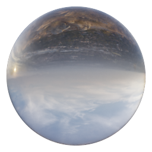

Materials
In this section are described the non standard materials present in Extreme PBR, that is the materials with an interface built specifically for such material.
Glass (Node Group)
{kind=link}

Inputs:
1. Glass Color (Rgba)
Change the color of the glass (All white for a neutral glass)
2. IOR (Value)
Change the index of IOR, which is the refractive index. Consult the refractive indices of various materials online.
3. Mirror Fx (Value)
Adds a further Reflection effect to the Glass, taking advantage of the metallic map. This is a trick, for best results it should be used with caution.
4. Dirty Roughness (Value)
Increases the dirty effect to the glass according to the texture that has been assigned. See the Texture Manager section to change image textures
5. Scale Uniform (Value)
Scale the size of the Dirty Roughness map. The scaling effect is seen only if a value other than 0 has been set in the Dirty Roughness property
Basic water (Node Group)


This material allows you to simulate the effect of animated water, it works once you start the Blender timeline
Inputs:
1. RGB (Rgba)
Water Color
3. Water Speed (Value)
Set the speed of the waves
4. Wave Strength (Value)
General height of all waves (Simulated with a bump)
5. Scale (Value)
Change the size of the waves
6. Roughness (Value)
Roughness, it might come in handy, if you use the Metallic Fluid parameter or Fluid Button
7. Metallic Fluid (Value)
It makes water look like a metallic fluid, such as mercury
8. Flowing water (Value)
Simulates a moving watercourse, to choose the direction of the watercourse use the “Rotation” parameter
10. Flow Direction (Value)
Adjusts the overall rotation of the waves. Useful when the water is animated in one direction
Rubber tires (Node Group)


Inputs:
1. Color (Rgba)
Change the color of the tire rubber
2. Scale Uniform (Value)
Scale the Roughness (Only if it is different from the value 0)
3. Roughness (Value)
Adjusts the intensity of the roughness, which is the one that simulates the difference between smooth and slightly rough areas on the tire rubber
4. Specular (Value)
Adjust the reflection on the tire rubber
Car Paint.001 (Node Group)
{kind=link}

Inputs:
1. Facing Color (Rgba)
Main Color
2. Grazing Color (Rgba)
Grazing color, Use Facing Blend to distribute the color
3. Facing Blend (Value)
Weight that blends from the first to the second shader as the surface goes from facing the viewer to viewing it at a grazing angle
4. Metallized (Value)
Mix between non-metallic and metallic. It will also simulate the metallic flakes within the paint. To change the flakes, use the values below
5. Flakes Size (Value)
Size of the metallic flakes inside the paint
6. Flakes Strength (Value)
Simulates the maximum slope of the metallic flakes. The higher the strength, the more the flakes will deflect the light.
7. Specular (Value)
Amount of dielectric specular reflection. Specifies facing (along normal) reflectivity in the most common 0 - 8% range. (To give a more real effect, use clearcoat)
8. Specular Tint (Value)
Tints the facing specular reflection using the base color, while glancing reflection remains white.
9. Roughness (Value)
Adjust the roughness of the car paint. Useful for creating a matt effect on the bodywork.
10. Clearcoat (Value)
Transparent finish
11. Clearcoat Roughness (Value)
Transparent finish roughness
12. Orange Peal (Value)
Transparent finish orange peal strength
13. Orange Size (Value)
Transparent finish orange peal, size
BluePrint 001 (Node Group)
This material is useful for creating an Engineering situation


Inputs:
1. Emission A (Value)
Base color emissivity
2. Base Color (Rgba)
Base Color
3. Line Color (Rgba)
Color of the lines
4. Emission B (Value)
Lines color emissivity
5. Small Square Line (Value)
Line size of the smallest squares.
6. Big Square Line (Value)
Line size of the largest squares.
7. Metallic (Value)
Metallic material intensity, attention, if the diffused color is completely black (RGB 0,0,0) no metallic effect can be displayed, move the color towards dark gray to obtain the desired effect.
8. Specular (Value)
Amount of dielectric specular reflection. Specifies facing (along normal) reflectivity in the most common 0 - 8% range.
9. Roughness (Value)
Specifies microfacet roughness of the surface for diffuse and specular reflection.
10. Bump (Value)
Strength of the bump mapping effect, interpolating between no bump mapping and full bump mapping.
11. Distance (Value)
Multiplier for the height value to control the overall distance for bump mapping.
13. Transparent (Value)
Set the transparency. Attention, in Eevee or in preview mode,transparency needs to be activated via the button on the right, otherwise the transparency will not work.
15. Rotation (Value)
The amount of rotation along Z axis
16. lx (Value)
Move the texture to the X axis
17. ly (Value)
Move the texture to the Y axis
18. Scale (Value)
Scale the texture to the X-Y-Z axes
Blueprint 002 (Node Group)


This material is useful for making project presentations. You can adjust the properties to modify the grid and create a customizable grid
Inputs:
1. Main Color (Rgba)
Adjust the main color
2. Grid Color (Rgba)
Adjust the grid color
3. Specular (Value)
Amount of dielectric specular reflection. Specifies facing (along normal) reflectivity in the most common 0 - 8% range
4. Roughness (Value)
Specifies microfacet roughness of the surface for diffuse and specular reflection
5. Crosses Thickness (Value)
Adjust the Thickness of the large grid
6. Crosses Span (Value)
Adjust the Span of the large grid
7. S. Crosses Span (Value)
Adjust the Span of the large grid
8. S. Crosses Thickness (Value)
Adjust the Thickness of the large grid
9. S. Crosses Scale (Int)
Adjusts the scale of the small grid
10. Shape Size (Value)
Adjusts the size of the shape at the intersection of the large grid
13. Loc X (Value)
Adjusts the position of the entire grid on the X axis
14. Loc Y (Value)
Adjusts the position of the entire grid on the Y axis
15. Rotation (Value)
Adjust the Rotation of the entire grid
16. Scale X (Value)
Adjust the Scale of the whole grid on the X axis
17. Scale Y (Value)
Adjust the Scale of the whole grid on the Y axis
18. Scale Uniform (Value)
Scales all material uniformly
20. World Coordinate (Button)
Projects the texture on world coordinates
Transparent (Node Group)

{kind=link}
Inputs:
1. Transparent Strength (Value)
Adjust the transparency of the transparent material. Remember that if you are in Eevee you must set the type of transparency with the button next to this property
Wireframe (Node Group)
This material traces the edges of objects with a color of your choice. The size of the border color varies according to the size / scale of the object and the parameters chosen.
{kind=link}

Inputs:
1. Base Color (Rgba)
Main color
2. Emission A (Value)
Sets the intensity of the light emitted. If 0, no light emitted. Limitations in Eevee: The emitted light will have no effect on surrounding objects, this only works in Cycles.
3. Transparent A (Value)
Transparency of the main color
4. Edge Color (Rgba)
Color of the lines on the edges
5. Emission B (Value)
Sets the intensity of the light emitted. If 0, no light emitted. Limitations in Eevee: The emitted light will have no effect on surrounding objects, this only works in Cycles.
6. Transparent B (Value)
Transparency of the edges color
7. Wireframe Size (Value)
Size of the lines tracing the edges
8. Metallic (Value)
Metallic material intensity, attention, if the diffused color is completely black (RGB 0,0,0) no metallic effect can be displayed, move the color towards dark gray to obtain the desired effect.
9. Specular (Value)
Amount of dielectric specular reflection. Specifies facing (along normal) reflectivity in the most common 0 - 8% range.
10. Roughness (Value)
Specifies microfacet roughness of the surface for diffuse and specular reflection.
Plasma (Node Group)
This material simulates a plasma effect, it is useful for creating a sci-fi effect.

{kind=link}
Inputs:
1. Color (Rgba)
Diffuse color of the plasma
2. From Min (Value)
The lower bound of the range to remap from.
3. From Max (Value)
The higher bound of the range to remap from.
4. Transparent (Value)
Transparency mix on all the material. If 0, no transparency
5. Emission Strength (Value)
Plasma Emissivity Note: In Eevee the material will not light up the scene, it will only work in Cycles
6. Animation Speed (Value)
Velocity of the plasma waves, if 0, no animation.
7. Reverse (Button)
Play the animation in reverse
8. Detail (Value)
Amount of distortion noise detail
9. Detail Scale (Value)
Scale of distortion noise
10. Detail Roughness (Value)
Blend between a smoother noise pattern, and rougher with sharper peaks
11. Distortion (Value)
Amount of distortion of the wave
12. rx (Value)
Rotate on the x axis
13. ry (Value)
Rotate on the y axis
14. rz (Value)
Rotate on the z axis
15. Scale (Value)
Uniform scale
Chess (Node Group)
A simple material that generates a chessboard that can be randomized. Follow the tips, to understand the use.

{kind=link}
Inputs:
1. Randomness (Value)
Randomize the size and position of the squares
2. Shrink Squares (Value)
Expands or contracts the size of the squares
3. Color A (Rgba)
Color A of the Squares
4. Color B (Rgba)
Color B of the Squares
5. Emission A (Value)
It emits light from the squares with color A
6. Emission B (Value)
It emits light from the squares with color B
7. Transp 1 (Value)
Transparency of color A
8. Transp 2 (Value)
Transparency of color B
9. Metallic (Value)
Metallic material intensity, attention, if the diffused color is completely black (RGB 0,0,0) no metallic effect can be displayed, move the color towards dark gray to obtain the desired effect.
10. Specular (Value)
Amount of dielectric specular reflection. Specifies facing (along normal) reflectivity in the most common 0 - 8% range.
11. Roughness (Value)
Specifies microfacet roughness of the surface for diffuse and specular reflection.
12. Rotation (Value)
Rotate the direction of the chessboard
13. LocX (Value)
Move the texture to the X axis
14. LocY (Value)
Move the texture to the Y axis
15. ScaleX (Value)
Scale the texture to the X axis
16. ScaleY (Value)
Scale the texture to the Y axis
17. Scale Uniform (Value)
Scale the texture to the X-Y-Z axes
Blend (Node Group)


Inputs:
1. Color A-B (Rgba)
Color A
2. Color B (Rgba)
Color B
3. Emission A (Value)
Emission Color A
4. Emission B (Value)
Emission Color B
5. Transparent A (Value)
Transparent Color A
6. Transparent B (Value)
Transparent Color B
7. Metallic A (Value)
Metallic Color A
8. Metallic B (Value)
Metallic Color B
9. Specular A (Value)
Specular Color A
10. Specular B (Value)
Specular Color B
11. Roughness A (Value)
Roughness Color A
12. Roughness B (Value)
Roughness Color B
13. Glass A (Value)
Transmission Color A
14. Glass B (Value)
Transmission Color B
15. IOR (Value)
Index of refraction for transmission.
16. Blend (Value)
Blend between Color A and Color B, this also has an effect on the basis of the point of view, color A is always facing the center of the object, and color B at the outline. For correct use, use the “Smart Shade Smooth” button
18. Noise (Value)
Mix between 0 noise and 1, this adds noise to the Blend.
19. Scale (Value)
Scale the Noise
20. Distortion (Value)
Distortion of the noise
21. Animation (Value)
Noise animation 0 = No animation